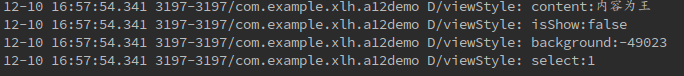
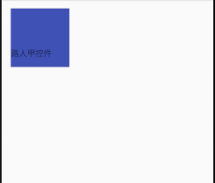

Introducción
La Vista personalizada, como su nombre indica, en el desarrollo de Android no es ni muy común ni muy escasa. No es muy común porque muchos desarrolladores orientados a Baidu/Google la usan con gran satisfacción; no es escasa porque cualquier APP quiere hacer su aplicación magnífica.
Breve introducción
Antes de comenzar con el tema de la Vista personalizada, hagamos una breve introducción, aunque el predecesor Xiaozhu ya la mencionó en una pregunta anterior (El concepto de View y ViewGoup), pero parece un poco tosco (esto lo escribió el predecesor hace más de un año, ¡en ese entonces yo todavía estaba de espectador!).
Android nos ofrece controles limitados, pero también proporciona canales de extensión. Al heredar controles, podemos enriquecer nuestras APPs (controles) a nuestro antojo. Es decir, la personalización permite que Android, como lenguajes como JS, tenga una gran cantidad de código abierto en comunidades como GitHub, Juejin, etc.; constantemente se aprenden e imitan buenos trabajos. Dicho esto, esta Vista(Grupo) personalizada parece imprescindible. Pero espera, por supuesto que buscar la personalización a ciegas no es particularmente bueno en el desarrollo real, especialmente ante problemas de adaptación. Aunque esto contradice un poco lo dicho antes, espero que cada quien tenga su opinión (en realidad, el blogger no escribe muchos controles personalizados, porque Material Design es suficiente para lograr estilos particulares. Pero lo que se debe decir, se dice; cada semana el blog es para rendirme cuentas a mí mismo).
Herencia y métodos de construcción de la Vista personalizada
Todo tiene un comienzo. En cuanto a la herencia, en realidad basta con ser una subclase de View, incluida la propia View. Por supuesto, las subclases de View (por ejemplo, TextView, ImageView ya vienen con algunos atributos; cómo elegir, pésalo tú mismo). En cuanto a la personalización, empecemos por los métodos de construcción.
Sin más preámbulos, primero el código
Si este control se crea con `new` en código Java, se debe implementar el método uno; si el control se usa directamente en XML, se debe implementar el método dos. Ambos se deben implementar al menos uno. A veces, se puede ser simple y directo: en el método uno, se puede cambiar
super(context)cambiar athis(context,null). Por supuesto, no explicaré en qué casos se puede hacer esto. A continuación, presentemos el parámetro AttributeSer.
AttributeSer - Atributos personalizados
Cada control tiene atributos. Siendo un control personalizado, ¿cómo podría faltar la personalización de atributos?
1. Para facilitar el desarrollo del tema, hagamos primero lo mismo: enres/values/en el directorio, agrega unattrs.xmleste archivo.
attrs.xml
Tipos de atributos personalizados admitidos
- reference: recurso de referencia
- string: cadena de texto
- Color: color
- boolean: valor booleano
- dimension: valor de dimensión
- float: coma flotante
- integer: entero
- fraction: porcentaje
- enum: tipo enumerado
- flag: operación bit a bit OR
2. Con estos atributos personalizados, lo siguiente es, por supuesto, aplicarlos a nuestros controles personalizados. Primero escríbelo en el código XML.
Después de completar los dos pasos anteriores, quizás estés ansioso por ejecutar el demo; quizás descubras que no apareció nada.
Apenas he empezado, dame un poco de tiempo; lo que sigue es lo importante.

3. Ya que tenemos los atributos personalizados y el control, lo siguiente es obtener estos atributos personalizados en nuestro código Java.
Salida de registro final:

Control personalizado - Vista - onMeasure
Si es un control, no hace falta decir nada; sin duda primero debe tener su ancho y alto. Pero ya hemos definido claramente en el XML ellayout_widght 与 layout_height, ¿por qué tenemos que reescribir especialmente el control personalizado? En cuanto al porqué, mira lo siguiente.
Algunos conceptos
El sistema Android nos proporciona la clase MeasureSpec, a través de la cual nos ayuda a medir la View. MeasureSpec es un valor int de 32 bits: los 2 bits altos representan el modo de medición, y los 30 bits bajos representan el tamaño de medición. ¿¡Esto es binario!? Sí, pero puedes estar tranquilo; Google realmente considera a los que somos malos en matemáticas. A través de los métodos de MeasureSpec podemos obtener los valores que necesitamos.
Hablemos ahora de los modos de medición. Los modos de medición pueden ser los siguientes tres:
- EXACTLY:Modo exacto Cuando establecemos los atributos layout_width y layout_height del control a valores concretos (excluyendo wrap_content), el sistema usa este modo. (Además, el onMeasure de la clase View es por defecto el modo EXACTLY, por lo que si no se sobrescribe onMeasure, solo se puede usar el modo predeterminado.)
- AT_MOST:Modo de valor máximo Cuando el atributo layout_width o layout_height del control es wrap_content, el tamaño del control generalmente cambia según los controles secundarios o el contenido. En este momento, el tamaño del control solo necesita no superar el tamaño máximo permitido por el control padre.
- UNSPECIFIED：No puede limitar su modo de medición de tamaño; la View puede ser tan grande como quiera. Normalmente se usa al dibujar una Vista personalizada.
Después de tener una idea vaga de los conceptos anteriores, empecemos a reescribir este método. Quizás estés impaciente, porque si no tenías una comprensión previa de la Vista personalizada, como yo al principio, te quedarás con cara de aturdimiento.
¡Eso es, misión cumplida! Supongo que onMeasure de View ya no les resulta desconocido, pero la historia aún no termina. Hablemos ahora del método layout.
Control personalizado - Vista - layout
layout, como su nombre indica, define la posición en la que se encuentra este control. En realidad, aunque determinemos el ancho y alto de este control mediante onMeasure, no todos los tamaños pueden mostrarse; también necesitamos usar layout para asignar a este control el espacio utilizable.
Como layout no es difícil, basta con entenderlo; así que sin ceremonias, directamente al código.
El ancho y alto actuales del control son 200px. El resultado de salida es: l:48 t:48 r:248 b:248
Los estudiantes inteligentes ya habrán deducido el significado de estos cuatro parámetros; para los que no lo entiendan, añadiré una imagen.

Más o menos así. Ustedes mismos capten la intención de mi dibujo... (¡¿Creen que es fácil dibujar con un panel táctil?!)
Una vez entendido el uso de layout, personalmente creo que layout no se usa mucho en la Vista personalizada. Pero aún así quiero mencionar algo más: si modificamossuper.layout(l,t,r±100,b±100)después, el control también cambiará o se expandirá según la posición asignada, pero no afectará la posición de otros controles; esto es muy diferente de onMeasure.

cdemo: agreguemos un control bajo el control MyView y veamos cómo se muestra su posición:
Control personalizado - Vista - onDraw
Lo que había que preparar, está preparado; lo que no se debía decir, también se dijo. Ahora toca sobrescribir nuestro método onDraw. Ya que es una Vista personalizada, se trata de que luzca un poco más 'llamativa' y con mayor personalización, así que el método onDraw es imprescindible.
El dibujo de una View no puede prescindir de Canvas, así que al sobrescribir el método onDraw, el sistema nos pasa un objeto Canvas; lo que queda es combinarlo con un Paint que creemos nosotros para dibujar la interfaz que queremos. Sin más palabras, aquí va el código ¡duang!

Así, hemos dibujado simplemente un círculo. ¿Sientes que el artículo sobre la Vista personalizada termina aquí? ¡Error! Hagamos un pequeño experimento. Añadimos un log Log.d("myView","onDraw"); debajo de super.onDraw(canvas);, y luego añadimos un evento a este control para ver qué sucede.
El método invalidate sirve para refrescar la View. Cuando hacemos clic en este control, el método onDraw se llamará repetidamente (además de al hacer clic, este método se llama con frecuencia). Esto también significa que, en realidad, el Paint en nuestro código de onDraw se creará múltiples veces. Jeje, ¿ya entiendes algo? A continuación, hablemos finalmente sobre la optimización de las View personalizadas.
注En cuanto al uso de las API de dibujo como Canvas, Paint, puedes consultar los artículos escritos por el predecesor Xiao Zhu. Después de todo, este blog es una continuación del blog de Xiao Zhu, así que no voy a reinventar la rueda.
- Explicación detallada de Canvas API (Parte 1)
- Explicación detallada de Canvas API (Parte 2) Colección de métodos de recorte
- Explicación detallada de Canvas API (Parte 3) Matrix y drawBitmapMash
Control personalizado - Vista - Camino hacia la optimización
Sin importar el tipo de desarrollo, el camino de la optimización es largo y difícil. En realidad, hay muchas formas de optimizar los controles personalizados; en este blog quizás no se explica con mucho detalle. Si hay más sugerencias, bienvenidos a plantearlas.
Forma de optimización 1Basándonos en el problema que encontramos anteriormente, el método onDraw se llamará repetidamente, lo que provoca que Paint se instancie repetidamente. Por lo tanto, no podemos crear nuevos objetos con new en este método. La mejor solución es instanciar directamente en el método constructor y definirlo como variable miembro. Así de simple.
Forma de optimización 2.... Lo siento, no puedo hacer nada más; ya no se me ocurre ninguna idea. Si en el futuro tengo alguna idea, la complementaré de inmediato.
Complemento
Además de los métodos sobrescritos mencionados anteriormente, los controles personalizados tienen otros métodos que se pueden sobrescribir:
- onFinishInflate():Devolución de llamada después de cargar el componente desde XML.
- onSizeChanged(): Devolución de llamada cuando cambia el tamaño del componente.
- onTouchEvent(): Devolución de llamada al supervisar eventos táctiles.
Algunos blogs sobre controles personalizados:
Para finalizar
El aprendizaje de View personalizado llega hasta aquí. Si tienes preguntas, no dudes en plantearlas.
-
Grupo QQ del blogger: 531878064
Dirección de GitHub del blogger:https://github.com/LH-031X
Dirección de CSDN:http://my.csdn.net/a981030980
Haz clic para compartir notas
<p style="font-size:14px;">¡La nota debe ser una ampliación del contenido de este artículo!</p><br> <p style="font-size:12px;"><a href="../tougao.html" target="_blank">Envío de artículos, haz clic aquí</a></p> <p style="font-size:14px;"><a href="./runoob-user-test-intro.html" target="_blank">Cómo obtener el código de invitación de registro</a></p> <h3 class="text-muted"><i class="fa fa-info-circle" aria-hidden="true"></i> Antes de compartir la nota, debes <a href=".." class="runoob-pop">iniciar sesión</a>.</h3> <p><a href="./runoob-user-test-intro.html" target="_blank">Cómo obtener el código de invitación de registro</a></p>